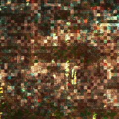
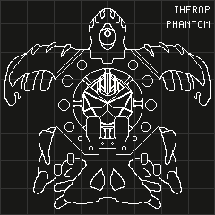
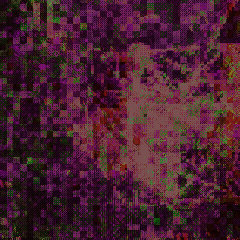

Salanth Town Gardens
Sprawling Gardens
Of Salanth Town
Hydroponic Miracle
Born into Dry Northcliff Sands
Warm and Easy Sundays
That Smooth Day of Respite
Let Rejja's Plantful Tending
Tend to your own Spirit

Jherop Phantom
PILOT: REJJA
Quiet and Polite
Racer and Gardener in one
Older than any do remember
RACER: JHEROP PHANTOM
Gifted Caravan of Sandwalker Zilst
Custom Solar Sails and Turbines
Stationary Core in Rotating Frame

The Gardener's Funeral
Question the Tragedy of Rejja
Who Raced True, Directly,
Into Cliff-face of the Graveyard
Question the Mistake of a Veteran
Shivery Spectre of Zadra Unova
Can't have been True
Forget Rumours this Moment
The Funeral Weeps Today